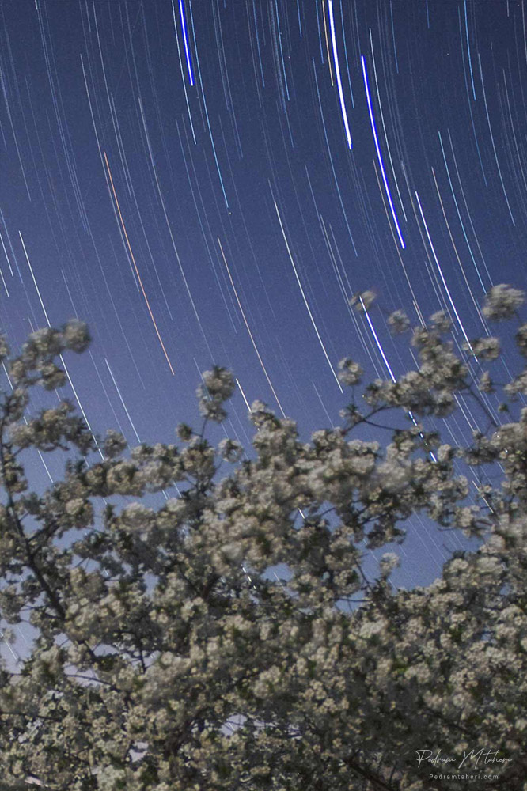
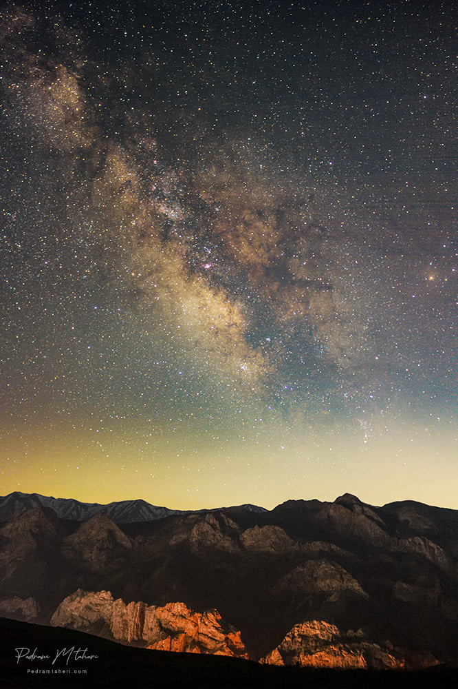
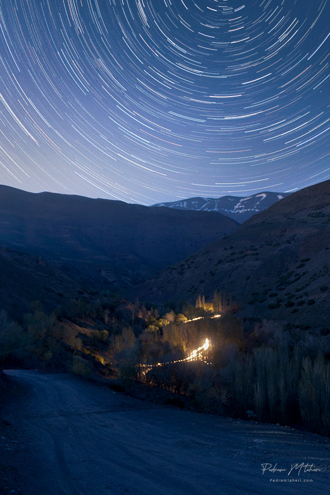
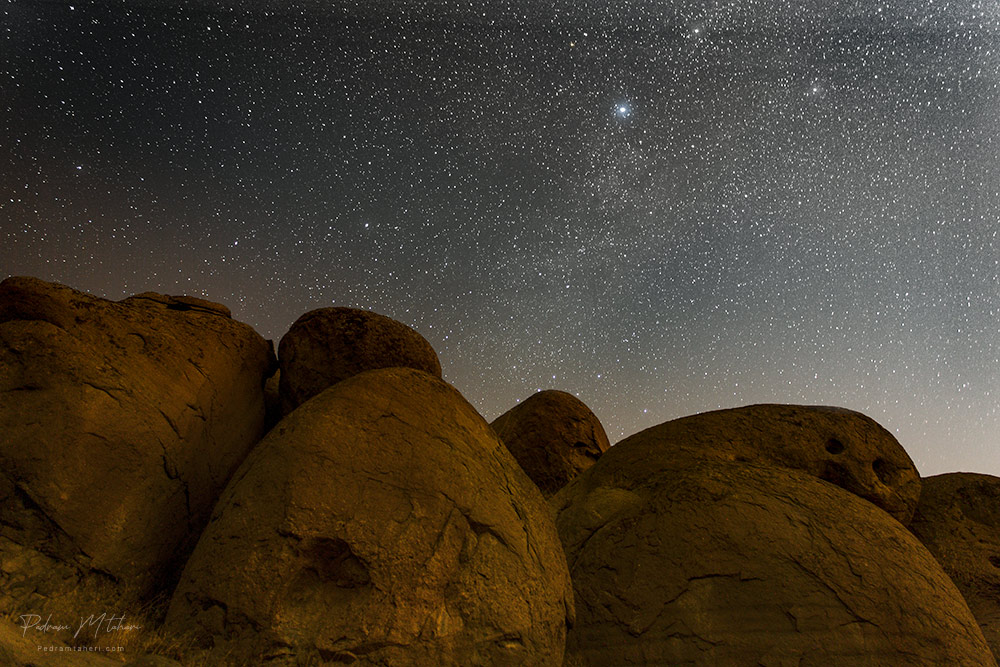
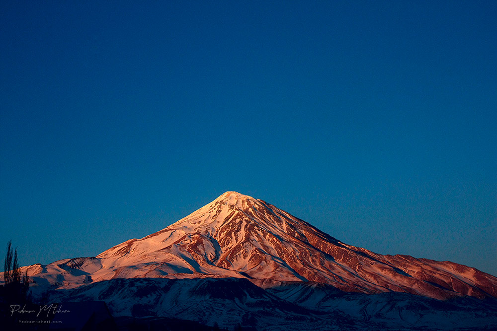
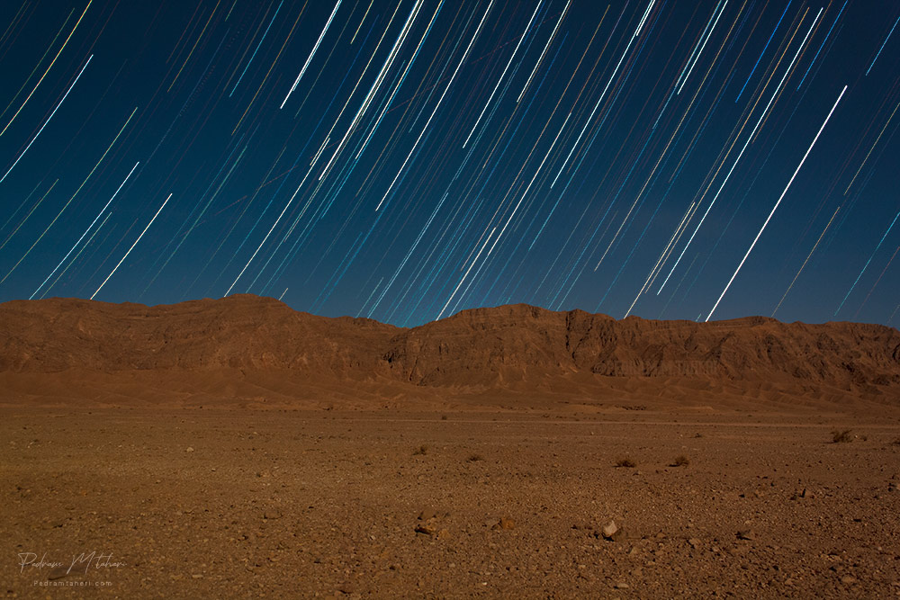
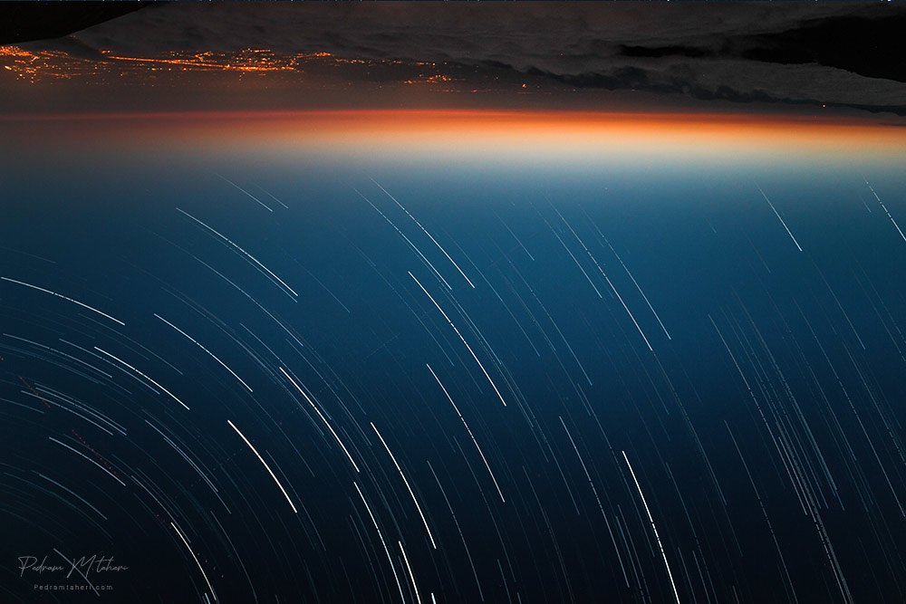
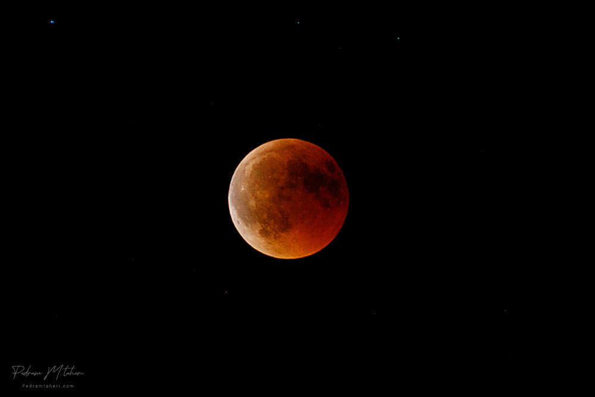
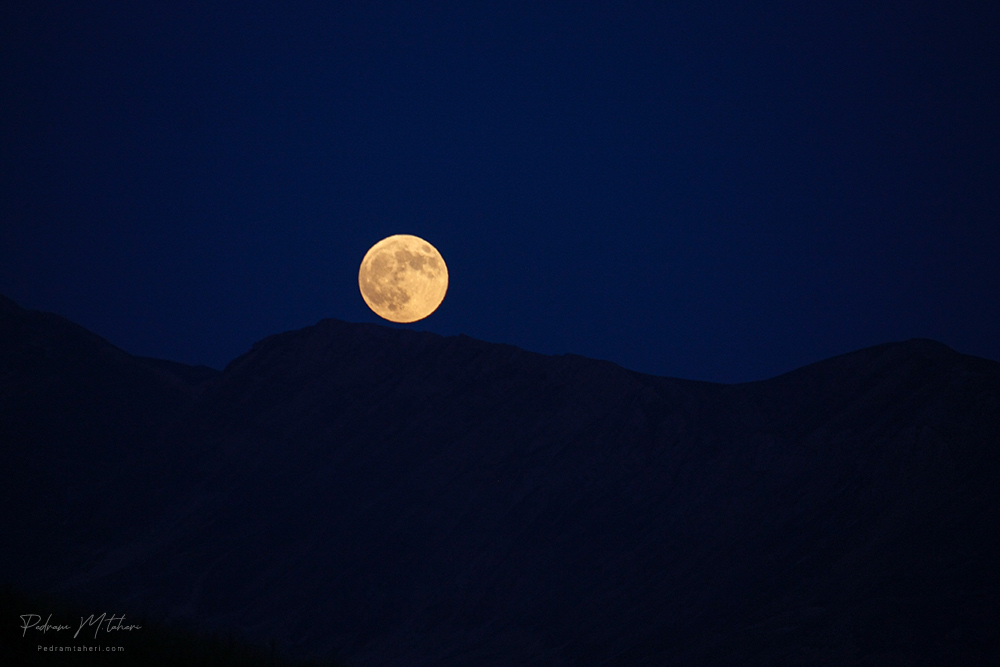
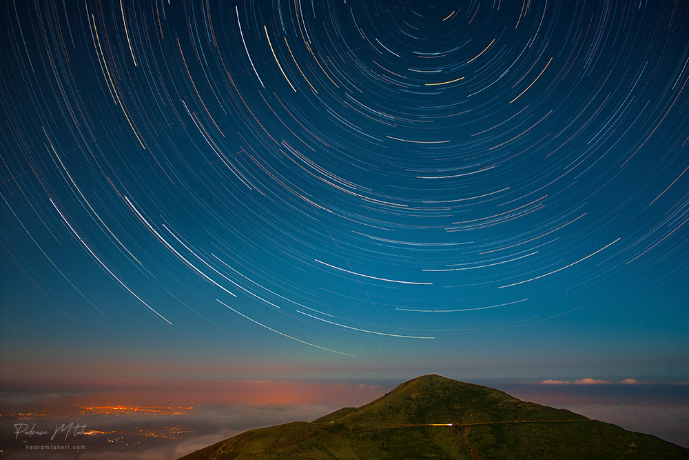
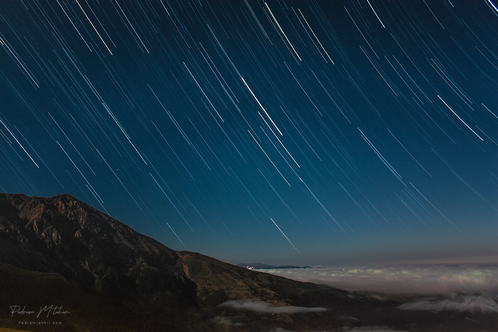
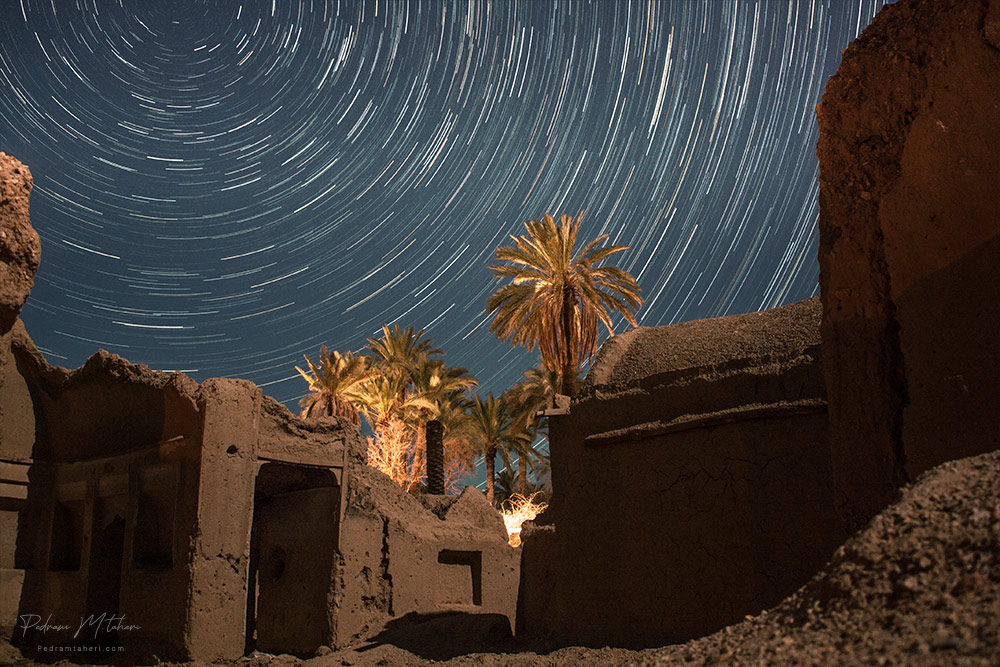

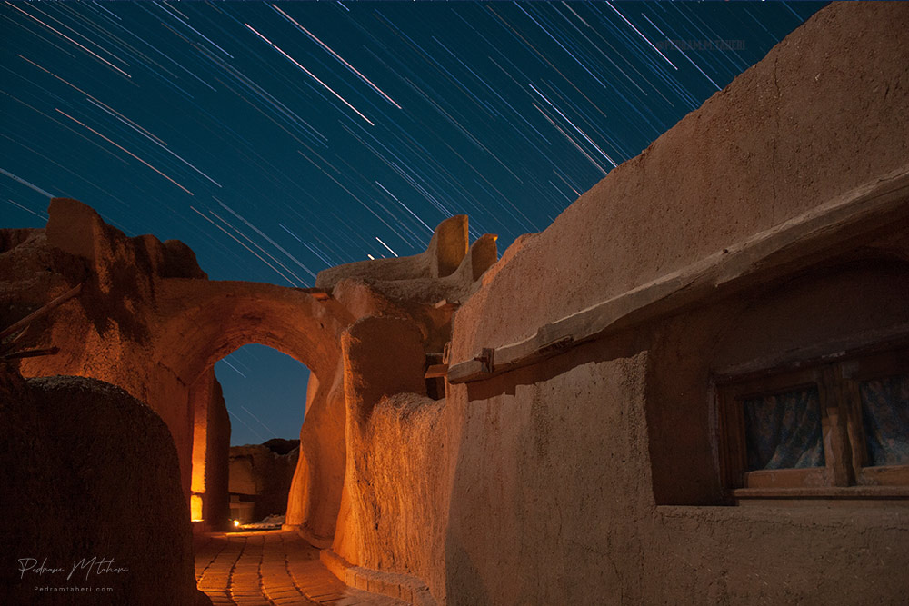
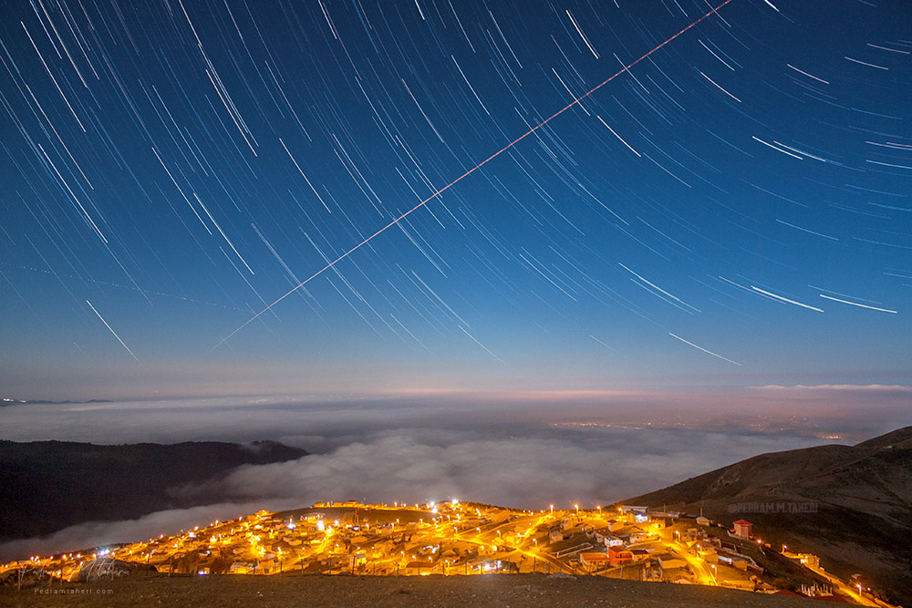
Field Log · Dark Sky Observations
Fifteen frames from nights spent away from city light —
nightscapes and deep-sky fields, recorded one exposure at a time.














Select frames from this collection will soon be available as limited fine art prints. Leave your email and be the first to know when the print shop opens.
Notify Me by Email